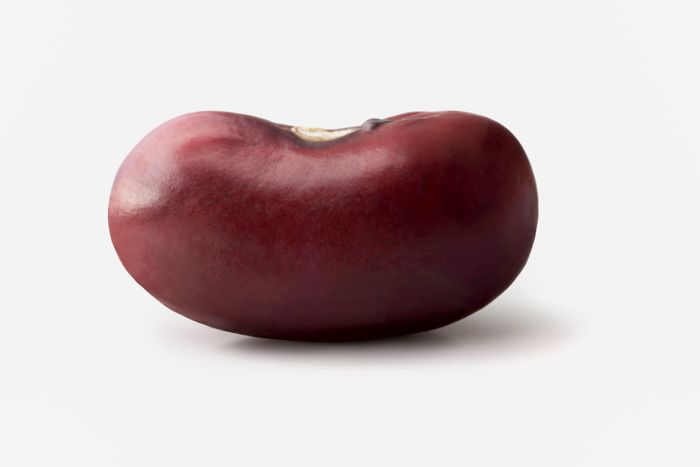

|  |
Big Bean Emporium
The Home of Beans
|
I have been a bean man for years, in my heart of heart maybe forever. As a child it was baked beans on toast, with a fry up if beans were on the menu, Nic was at the table.
At Uni i developed a strong dependence on jacket potatoes with cheese and beans for general survival. However as I have grown older, my love for beans has developed into a more refined appreciation
as my discovery of Mexican food developed my love and knowledge of beans also developed alongside. In this page you will find out how this has affected my life, and hopefully find how it can affect your own
Types of beans
- baked bean
- hot bean
- cold bean
- can be made hot (if heat is applied)
Best thing to put beans with
- taco
- burrito
- jacket potato
- nothing but the cold reality youre eating beans straight from the can
Bean Experience
| Dates |
Experience |
| 1995-2010 |
Eating backed beans on toast |
| 2008+ |
Incorporating baked potatoes intot his scenario |
|
|
Bean Skills